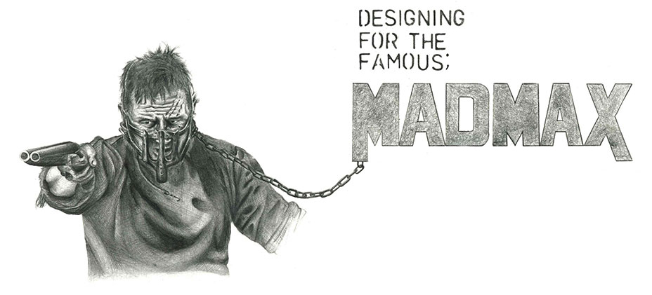
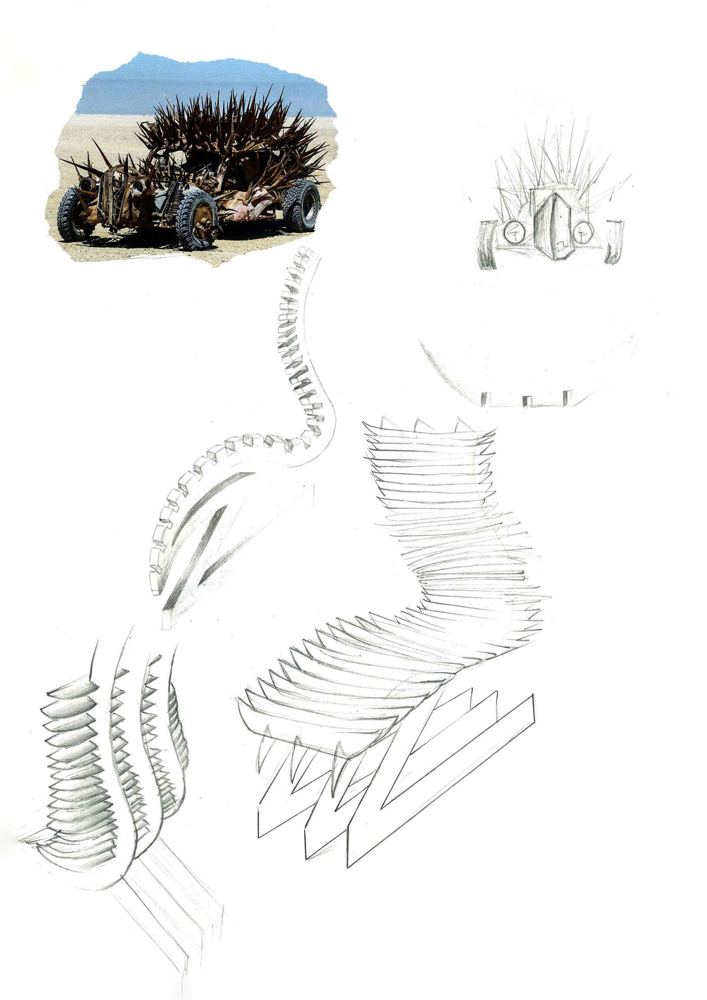
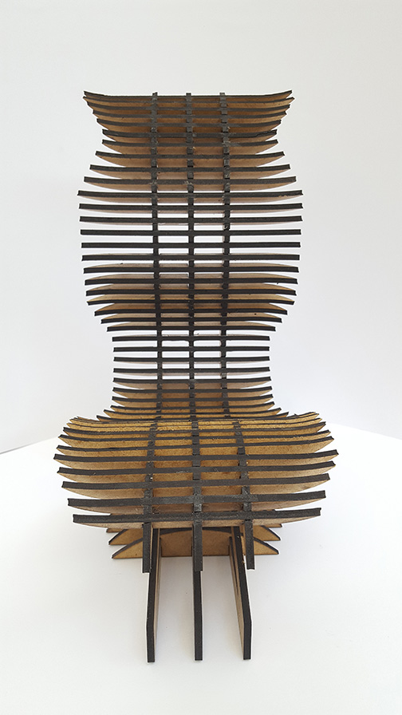
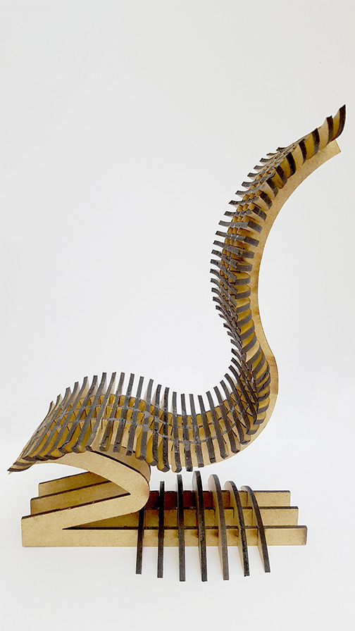
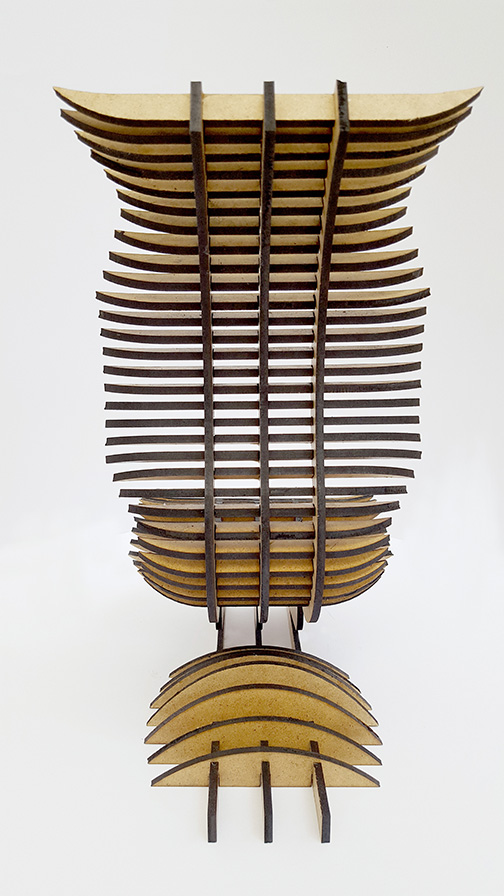
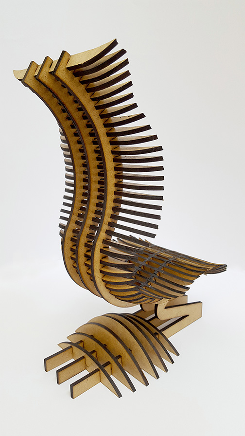
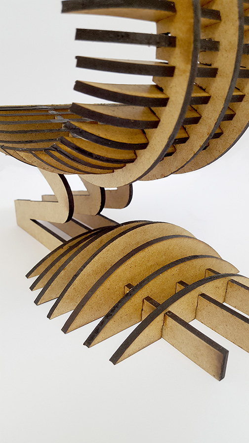

The brief for this project was to produce a piece of furniture inspired by a famous person or character. I decided to use the film MadMax as inspiration for my design. The chair was made to be easily assembled and would slot together. It has sharp angles whilst following a natural form in order to be comfortable to the user.
      